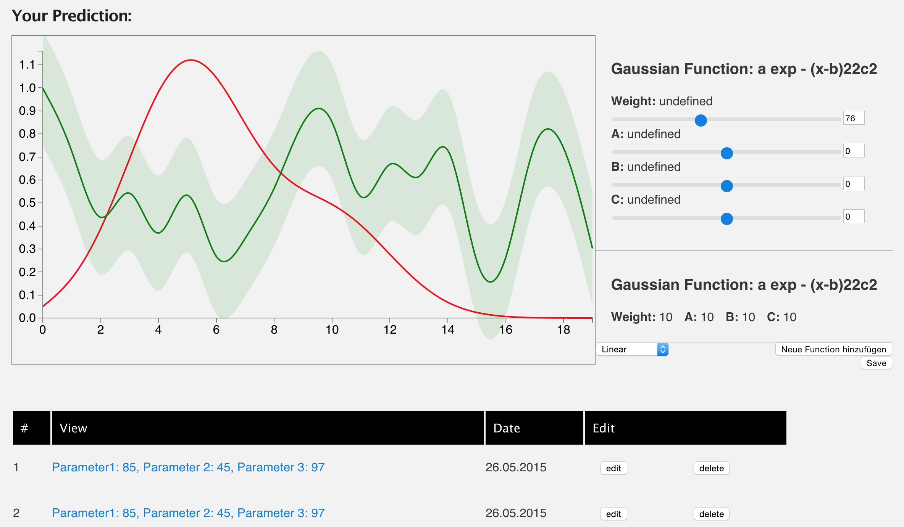

Home Project Team M1 M2 M3 Project
M3: Hi-Fi Prototype presentations
Very brief reminder of your problem
Our Goal is to create a tool for CityBike employees. It should enable them to forecast future usage and plan ahead. We do this by providing them with an interactive and adjustable tool visualizing historic trends of the usage.
CityBike employees can adjust the prediction line by adjusting certain parameters which in our case are mathematical functions. Users can add new functions allowing them to recreate the desired prediction curve.


Any changes to the original visualization design or work plan
- due to feedback we took different aspects of our 3 Mockups which now add up to our final design
- The line showing the actual data now also displays the standard deviation
- our parameters for editing the prediction line are mathemathical functions which you can add and edit
Progress so far
Our major focus has been on the graph and deciding how best to let the user "play" with our tool to edit the prediction line however he/she likes. We decided on using mathematical functions as our parameter for this and the user can then utilize sliders to change the weight of each element of a function. (linear function = KX+D - the user can change the range value for both K & D).
Implementation Details:- D3 Map of Vienna as district filter
- layout for stations filter
- filter for timeframe
- see "actual" line with standard deviation
- dynamically create functions
- add new functions
- edit range values with sliders
- work on views (edit/delete)
- tool tips & legend for graph
- better solution for station selection
- slider for standard deviation
Current major challenges or problems
ChristophOne of our challenges is deciding on how to handle the selection of Stations as there is such a huge volume and can easily be overwhelming.
Presentation of your hi-fidelity prototype
Questions or discussion points
- Is the tool intuitive enough?
- What do you think of the design?
- What would you have done different?